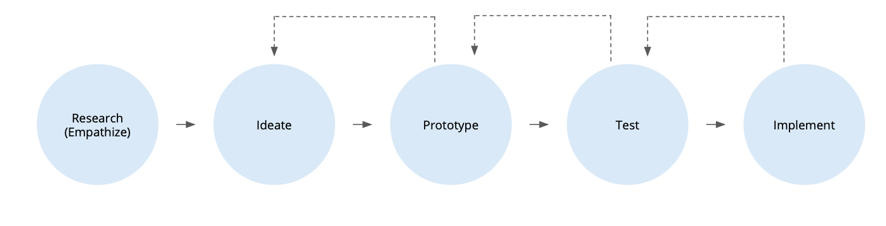

Over the last 10 years, I have driven effective product design at tech companies of various sizes.
I specialize in B2B/SaaS enterprise design including tech space, ML and Dev/Data Science Tools.
I have helped to build high performing, highly collaborative, empathetic, and agile UX teams.
I pride myself on being a supportive UX mentor and a nurturing people manager, who grows leaders from within.
Big or small projects, I always keep Design Thinking methodology top of my mind. I believe in collaboration, sharing ideas early on, getting user feedback often and iterating fast. I've successfully implemented this approach at several workplaces, ensuring efficient and impactful design solutions.

Both an individual contributor and a team lead, I've led many large-scale design initiatives and have experienced
a broad spectrum of design methodologies, including problem discovery, hands-on design, testing, and developer hand-offs.
My leadership extends to guiding teams and mentoring designers, setting design roadmaps aligned with core business objectives,
and establishing both team and individual OKRs.
I also have experience in effectively improving cross-team collaboration and streamlining the design process.